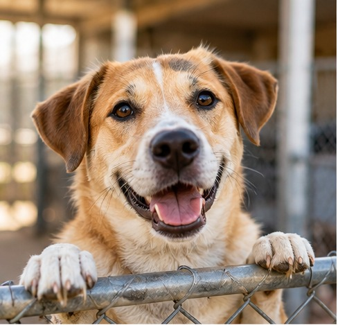

Our Mission
Twin Cities Animal Rescue works to help animals in need and connect them with caring families. We also provide opportunities for people in the community to support animals through volunteering and fostering.

Our Impact
Our rescue works with community members to help animals find safe homes and receive the care they need. Volunteers, foster families, adopters, and donors all play an important role in supporting our work.
How You Can Help
There are several ways you can support Twin Cities Animal Rescue. You can adopt an animal, become a foster family, volunteer your time, or learn more about supporting our rescue.
Get Involved
Whether you want to foster, volunteer, or learn more about adoption, your support can make a difference for animals in our community.